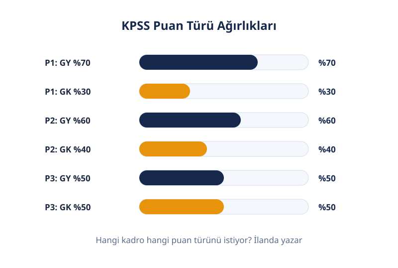
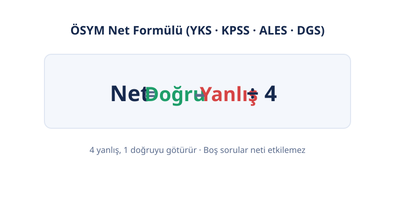
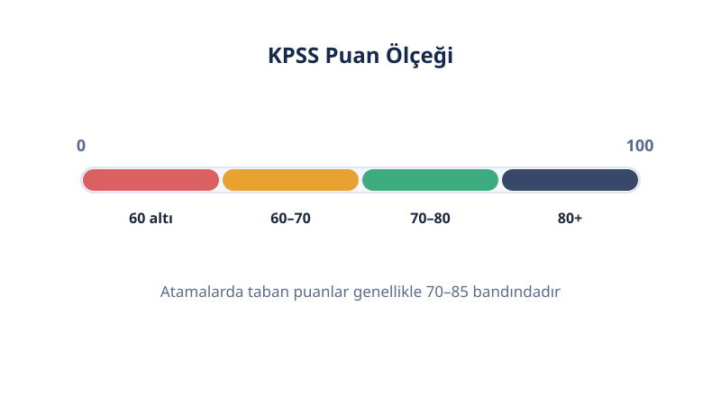

Kamu Sınavları
KPSS Puan Hesaplama
Son güncelleme: 18 Ekim 2026 · Yazar: PuanRobotu Editör Ekibi
Genel Yetenek ve Genel Kültür testlerindeki doğru ve yanlış sayılarını gir; tahmini P1, P2 ve P3 puanlarını anında öğren. Hesaplama, ÖSYM'nin resmi puanlama mantığına ve yayınlanmış net–puan verilerine dayanır.
KPSS Puan Hesaplama Aracı
Her test için doğru ve yanlış sayılarını yaz. Sonuçlar anında güncellenir. ÖSYM kuralı gereği her testte en az 1 işaretleme olmalı.
Değerleri gir, tahmini puanların burada görünsün.
Öne Çıkanlar
- KPSS puanı, netlerin standart puana çevrilip puan türü ağırlıklarıyla birleştirilmesiyle bulunur. 4 yanlış, 1 doğruyu götürür.
- P1 = GY %70 + GK %30, P2 = GY %60 + GK %40, P3 = GY %50 + GK %50 ağırlığıyla hesaplanır.
- 2026'da öğretmen adayları KPSS'ye girmiyor; MEB-AGS'ye giriyor. P10 ve P121 kaldırıldı.
- Bu sayfadaki sonuçlar tahmindir; gerçek puanı ÖSYM sınav sonrası açıklar.
- Kabaca (P3): 40 net ≈ 70 puan, 60 net ≈ 77 puan, 80 net ≈ 85 puan.
KPSS Puanı Nedir?
KPSS puanı, ÖSYM'nin Kamu Personel Seçme Sınavı sonuçlarına göre hesapladığı 100'lük ölçekteki yerleştirme puanıdır. Genel Yetenek ve Genel Kültür testlerindeki netler önce standart puana çevrilir, ardından başvurulan kadronun istediği puan türünün ağırlıklarıyla birleştirilir. En yüksek puan 100'dür; KPSS puanı 2 yıl geçerlidir.
KPSS Puanı Nasıl Hesaplanır?
KPSS puanı 4 adımda hesaplanır: net bulma, standart puana çevirme, puan türü ağırlıklarıyla birleştirme ve 100'lük ölçeğe dönüştürme. İlk adımı sen yaparsın; kalan 3 adımı ÖSYM sınav sonrası uygular.

Adım 1 — Netleri bul
Her test için Net = Doğru − (Yanlış ÷ 4) formülü uygulanır. 4 yanlış, 1 doğruyu götürür. Boş bırakılan sorular neti değiştirmez. GY ve GK netleri ayrı ayrı hesaplanır.
Adım 2 — Standart puana çevir
ÖSYM, her testin netini o yıl sınava girenlerin dağılımına göre standart puana dönüştürür: ortalama 50, standart sapma 10. Aynı testte aynı neti yapan herkes aynı standart puanı alır. Sorular tek tek ağırlıklandırılmaz; 60 sorunun her biri net hesabında eşittir.
Adım 3 — Puan türünün ağırlıklarıyla birleştir
Standart puanlar, başvurulan kadronun istediği puan türünün katsayılarıyla çarpılıp toplanır. Böylece ağırlıklı standart puan (ASP) bulunur.
| Puan Türü | Genel Yetenek | Genel Kültür | Kullanım |
|---|---|---|---|
| P1 | %70 | %30 | A grubu kadrolar (kurum ilanıyla) |
| P2 | %60 | %40 | A grubu kadrolar (kurum ilanıyla) |
| P3 | %50 | %50 | B grubu merkezi yerleştirme (lisans) |
| P93 | %50 | %50 | B grubu merkezi yerleştirme (ön lisans) |
| P94 | %50 | %50 | B grubu merkezi yerleştirme (ortaöğretim) |
Adım 4 — 100'lük ölçeğe dönüştür
Resmi formül Puan = 70 + 30 × [2(ASP − X) − S] ÷ [2(B − X) − S] şeklindedir. X, ASP ortalaması; S, standart sapması; B, en yüksek ASP'dir. En yüksek ASP'ye sahip aday 100 puan alır.
Tam çözümlü örnek: bir adayın ASP'si 60 olsun; o yılın ortalaması X = 50, standart sapması S = 10, en yüksek ASP B = 80 olsun. Puan = 70 + 30 × [2(60 − 50) − 10] ÷ [2(80 − 50) − 10] = 70 + 30 × 10 ÷ 50 = 76. Buradaki X, S ve B değerleri örnektir; gerçek değerleri yalnızca ÖSYM bilir.
Formül ve Çalışılmış Örnek
Yukarıdaki 4 adımın tamamı sınav-sonrası veriye ihtiyaç duyar. Bu araç, 4. adımdaki bilinmeyenleri yayınlanmış bir net–puan tablosuyla (2025 KPSS verileri: 40 net → 69,87; 60 net → 77,40; 66,9 net → 80; 80 net → 84,93) değiştirir ve şeffaf tahmin üretir.

Bir adayın deneme sonucu: GY 42 doğru 13 yanlış (5 boş), GK 35 doğru 18 yanlış (7 boş).
- GY net: 42 − (13 ÷ 4) = 38,75
- GK net: 35 − (18 ÷ 4) = 30,50
- Toplam net: 69,25
- Tahmini P1 (GY %70): ≈ 82,13
- Tahmini P2 (GY %60): ≈ 81,51
- Tahmini P3 (%50–%50): ≈ 80,88
GY neti GK'den yüksek olduğu için GY ağırlıklı P1 en yüksek çıkar. Bu örneği yukarıdaki araca girerek aynı sonucu aldığını doğrulayabilirsin.
Bu Hesaplayıcı Nasıl Kullanılır?
- GY doğru sayını yaz. Genel Yetenek testindeki doğru sayını ilk kutuya gir (0–60).
- GY yanlış sayını yaz. Aynı testteki yanlış sayını ikinci kutuya gir.
- GK doğru ve yanlışlarını yaz. Genel Kültür için aynı iki değeri gir (0–60).
- Hesapla'ya bas. Tahmini P1, P2 ve P3 puanın anında görünür.
- Sonucu yorumla. Aşağıdaki tabloda hedef kadronun taban puanıyla karşılaştır.
Her iki testte de en az 1 işaretleme yapmalısın; ÖSYM kuralı gereği boş bırakılan testin puanı hesaplanmaz.
Sonucunu Nasıl Okumalısın?
Tahmini puanın, hedef kadronun son yerleştirmedeki taban puanıyla karşılaştırıldığında anlam kazanır. Tek başına 80 puan iyi ya da kötü değildir; kadronun tabanı belirleyicidir.

| Tahmini P3 | Yaklaşık Net | Ne Anlama Gelir? | Sonraki Adım |
|---|---|---|---|
| 85+ | 80+ | Çoğu B grubu kadro için rekabetçi aralık | Hedef kadroların taban puanlarını listele, tercih stratejisi kur |
| 80–85 | 67–80 | Birçok kadro için yeterli, popüler kadrolarda sınırda | Zayıf testine odaklan, neti 5–10 artır |
| 75–80 | 55–67 | Orta aralık; kadro seçimi kritik | GY/GK dengeni gözden geçir, deneme analizi yap |
| 70–75 | 40–55 | Alt aralık; az kadro bu banda düşer | Temel konuları bitir, yanlış sayını azalt |
| 70 altı | 40 altı | Yerleşme şansı düşük | Çalışma planını baştan kur, konu eksiği kapat |
2026 İstatistikleri Açıklandı: Tahmin İçin Ne Anlama Geliyor?
ÖSYM, 7 Ekim 2026'da açıklanan KPSS Lisans sonuçlarıyla test istatistiklerini yayımladı: GY ortalaması 19,44; GK ortalaması 20,08. Bir önceki yılın değerleri GY 17,43 ve GK 14,30 idi.
Bu ne anlama gelir? Ortalamalar yükseldiği için aynı net, 2026'da bir önceki yıla göre biraz daha düşük standart puana denk gelir. Bu sayfadaki tahmin tablosu 2025 verilerine dayanır; 2026 zorluğunda aynı netten bir miktar düşük puan çıkması normaldir. Rakiplerin tabloları da hâlâ 2025 (hatta ön lisans için 2018) verilerini kullanıyor; hiçbiri bu güncellemeyi sayfasına işlemedi.
Aynı 70 Net, Üç Farklı Puan: Dağılımın Gücü
Toplam netin aynı olması, P1 ve P2 puanının aynı olacağı anlamına gelmez. 70 neti iki farklı dağılımla yapan adayların tahmini puanları (bu sayfadaki hesaplayıcıyla):
| Net Dağılımı | Tahmini P1 | Tahmini P2 | Tahmini P3 |
|---|---|---|---|
| GY 45 + GK 25 | 84,18 | 82,67 | 81,17 |
| GY 35 + GK 35 | 81,17 | 81,17 | 81,17 |
| GY 25 + GK 45 | 78,15 | 79,66 | 81,17 |
Ders: P3 hedefliyorsan dağılım fark etmez; P1 hedefliyorsan GY'ye yüklen — 6 puanlık fark, kadro barajında belirleyici olur. Rakip hesaplayıcıların hiçbiri P1/P2 hesabı yapmıyor.
P1 ve P2 Tahmini Nasıl Yapılıyor?
P1 ve P2 tahmini "eşdeğer net" yöntemiyle yapılır. Yayınlanmış net–puan tablosu toplam nete göre hazırlandığı için önce ağırlıklı netin toplam-net karşılığı bulunur: P1 için eşdeğer net = 2 × (0,70 × GY net + 0,30 × GK net). Bu değer tabloda okunur.
Dayanağı şeffaftır: standart puan nette doğrusala yakın davrandığı için ağırlıklı netin toplam net cinsinden karşılığı aynı eğride okunabilir. GY ve GK'nın o yılki ortalama ve standart sapması eşit olsaydı bu yöntem birebir doğru olurdu; gerçekte küçük bir yaklaşım payı vardır.
40 Netin Altında Tahmin Neden Daha Belirsiz?
40 netin altındaki tahminler, dayanak tablonun dışına taşan ekstrapolasyondur. Tablodaki en düşük nokta 40 nettir (69,87 puan); altındaki değerler doğrusal uzatmayla bulunur ve hata payı büyür.
Pratik sonuç: 30 net civarındaki tahmini bir aralık olarak oku, tek sayı olarak değil. Hiçbir rakip sayfa bu uyarıyı yapmıyor.
İnternetteki Yanlış KPSS Ağırlık Tabloları
Bazı sitelerdeki KPSS ağırlık tabloları yanlıştır. Örneğin yakın tarihli bir sayfada P1 "GY %50 + GK %50" olarak yazıyor; doğrusu GY %70 + GK %30'dur. Aynı sayfada P10 ve Eğitim Bilimleri %40 ağırlıkla "güncel" gibi anlatılıyor; oysa 2026'da Eğitim Bilimleri testi de P10 da yok.
Kural basit: "Eğitim Bilimleri %40" yazan her tablo güncel değildir. Ağırlıkları her zaman ÖSYM kılavuzundan teyit et; yukarıdaki tablo kılavuzla birebir uyumludur.
Sınırlamalar
Bu araç ÖSYM'nin yerini tutmaz; 4 somut sınırı vardır.
- Standart sapma bilinmiyor. Gerçek puan o yılın aday dağılımına bağlıdır; aynı net farklı yıllarda farklı puana denk gelir.
- 40 net altı ekstrapolasyondur. Dayanak tablonun altındaki tahminler daha az güvenilirdir.
- P1/P2 eşdeğer-net yaklaşımıdır. GY ve GK dağılımları farklıysa küçük sapma olur.
- 2025 verilerine dayanır. 2026 sınavının zorluğu farklıysa tablo kayar; yukarıdaki 2026 istatistikleri bölümü bu etkiyi açıklar.
Hangi Puan Türü Sana Lazım?
Doğru puan türü, başvuracağın kadronun ilanında yazar. Yanlış türle hesap yapmak en yaygın hatadır.
| Puan Türü | Kimler İçin? | GY Ağırlığı | Ne Zaman? |
|---|---|---|---|
| P1 | Lisans mezunları | %70 (yüksek) | GY'si güçlü adaylar; A grubu ilanları |
| P2 | Lisans mezunları | %60 (orta) | A grubu ilanları; P1–P3 arası denge |
| P3 | Lisans mezunları | %50 (eşit) | B grubu merkezi yerleştirme; en yaygın tür |
| P93 | Ön lisans mezunları | %50 (eşit) | B grubu merkezi yerleştirme (ön lisans) |
| P94 | Ortaöğretim mezunları | %50 (eşit) | B grubu merkezi yerleştirme (lise) |
Öğretmen adayıysan bu tablodaki hiçbir tür sana uygun değil; 2026'dan beri öğretmenlik puanı ÖABT puan hesaplama sayfasındaki MEB-AGS-P2 sistemiyle bulunuyor.
İpuçları
- Yanlışların maliyetini bil: Emin olmadığın soruda rastgele işaretleme, 4 yanlışta 1 net götürür. En az 2 şıkkı eleyebiliyorsan işaretlemek mantıklıdır.
- Hedef puana göre çalış: P1 hedefliyorsan GY'ye (özellikle Matematiğe) ağırlık ver; P3 hedefliyorsan iki testi dengeli tut.
- Geçerlilik koşulunu unutma: Puanın hesaplanması için her iki testte de en az 1 işaretleme yapmalısın.
- Taban puanları takip et: Atamada önemli olan netin değil, hedef kadronun son yerleştirmedeki taban puanıdır.
Sonraki Adımlar
- Öğretmen adayıysan, 2026'nın yeni sistemine göre puanını ÖABT puan hesaplama aracımızla bul.
- Tıpta uzmanlık hedefliyorsan, K ve T puanlarını TUS puan hesaplama aracımızla tahmin et.
Yasal uyarı: Bu sayfadaki araç ve içerik bilgilendirme amaçlıdır; ÖSYM'nin resmi hesaplama ve yerleştirme süreçlerinin yerini tutmaz. Kadro ve başvuru koşulları için ilgili kurumun ilanını ve ÖSYM kılavuzunu esas al.
Sık Sorulan Sorular
KPSS'de yanlış doğruyu götürür mü?
Evet. KPSS'de her test için Net = Doğru − (Yanlış ÷ 4) uygulanır; yani 4 yanlış, 1 doğruyu götürür. Boş bırakılan sorular neti etkilemez.
P1, P2 ve P3 puanları arasındaki fark nedir?
Genel Yetenek ve Genel Kültür testlerinin ağırlıkları farklıdır: P1'de GY %70–GK %30, P2'de %60–%40, P3'te %50–%50. Hangi kadronun hangi puan türünü istediği, kurumun ilanında yazar. P93 (ön lisans) ve P94 (ortaöğretim) de P3 gibi %50–%50 ağırlıktadır.
Öğretmen adayları KPSS'ye giriyor mu?
Hayır. 2026 itibarıyla öğretmen adayları KPSS'ye değil, Millî Eğitim Bakanlığı Akademi Giriş Sınavı'na (MEB-AGS) giriyor. KPSS'de artık Eğitim Bilimleri testi ve P10/P121 puan türleri yok.
Bu araçtaki puanlar neden “tahmini”?
ÖSYM gerçek puanı sınav sonrası hesaplar: her testin neti önce standart puana çevrilir (ortalama 50, standart sapma 10), sonra puan türünün ağırlıklarıyla birleştirilip 100'lük ölçeğe dönüştürülür. Bu dönüşümdeki ortalama, standart sapma ve en yüksek puan sınavdan önce bilinemez. Bu araç, 2025 KPSS istatistikleriyle hazırlanmış yayınlanmış bir net–puan tablosuna dayalı şeffaf tahmin yapar.
KPSS'de hedef puan için kaç net gerekir?
Resmi bir baraj yoktur; önemli olan hedef kadronun taban puanıdır. Kabaca (P3, 2025 verileri): 40 net ≈ 70 puan, 60 net ≈ 77 puan, 80 net ≈ 85 puan. Atama taban puanları her yerleştirmede değişir.
Girdiğim veriler saklanıyor mu?
Hayır. Tüm hesaplama tarayıcında yapılır; doğru–yanlış sayıların hiçbir sunucuya gönderilmez ve saklanmaz.
KPSS P1 ve P2 puanını kimler kullanır?
A grubu kadrolara başvuran lisans mezunları. Hangi kurumun hangi puan türünü istediği, o kurumun personel alım ilanında yazar. İlanda tür belirtilmiyorsa B grubu merkezi yerleştirme (P3) geçerlidir.
KPSS puanı kaç yıl geçerli?
2 yıl. Bu süre içinde yapılan merkezi yerleştirmelerde ve A grubu alımlarında kullanılır; süre dolunca yeniden sınava girmek gerekir.
Ön lisans ve lise mezunlarının KPSS'si farklı mı?
Sınav formatı aynıdır (120 soru, GY + GK), ancak puan türü farklıdır: ön lisans için P93, ortaöğretim için P94 hesaplanır. İkisi de %50–%50 ağırlıktadır.